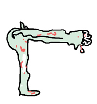

That's what the textbooks say, anyway. . . . although I have no idea why! It's easy to remember though, so I'll roll with it. (it seems like most of the kanji involving butts, farts, or pee have this, so maybe that is the origin?)
Anyway, think of it as a dude that died and his upper body toppled over, while his legs are standing up due to rigor-mortis.

 KANJIDAMAGE
KANJIDAMAGE
 Number
495
Number
495